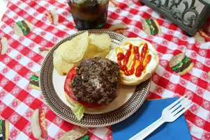

Blue Cheese Burgers

Description:
This Blue Cheese Burger will put a Kentucky twist on an
American classic! Once you make these, you're sure to
get an invite back to the next barbecue!
Ingredients:
- 3 pounds lean ground beef
- 4 ounces blue cheese, crumbled
- 1/2 cup minced fresh chives
- 1/4 teaspoon hot pepper sauce
- 1 teaspoon Worcestershire sauce
- 1 1/2 teapsoons salt
- 12 French rolls or hamburger buns
Steps:
- In a large bowl, mix the ground beef, blue cheese, chives,
hot pepper sauce, Worcestershire sauce, black pepper, salt,
and mustard. Cover, and refrigerate for 2 hours.
- Preheat grill for high heat. Gently form the burger mixture
into about 12 patties.
- Oil the grill grate. Grill patties 5 minutes per side, or
until well done. Serve on rolls.